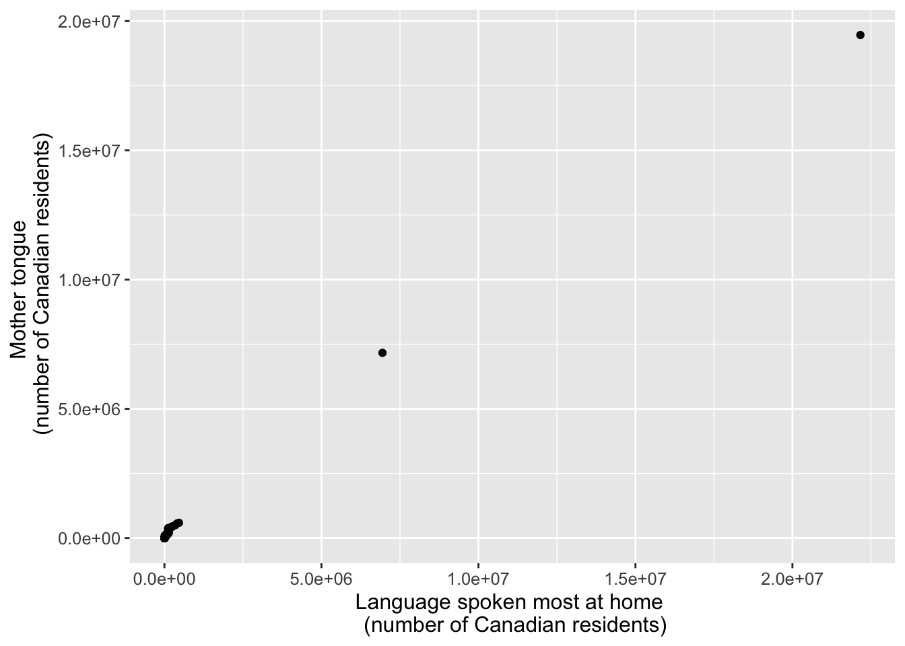
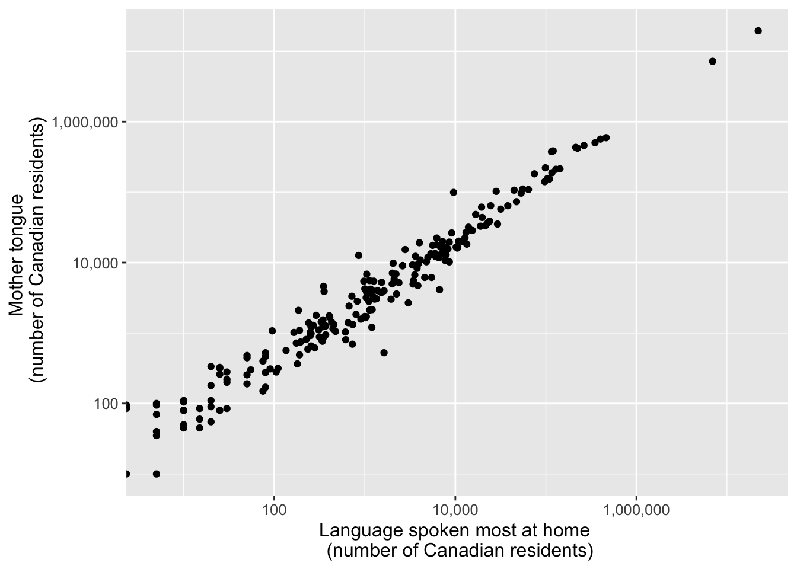
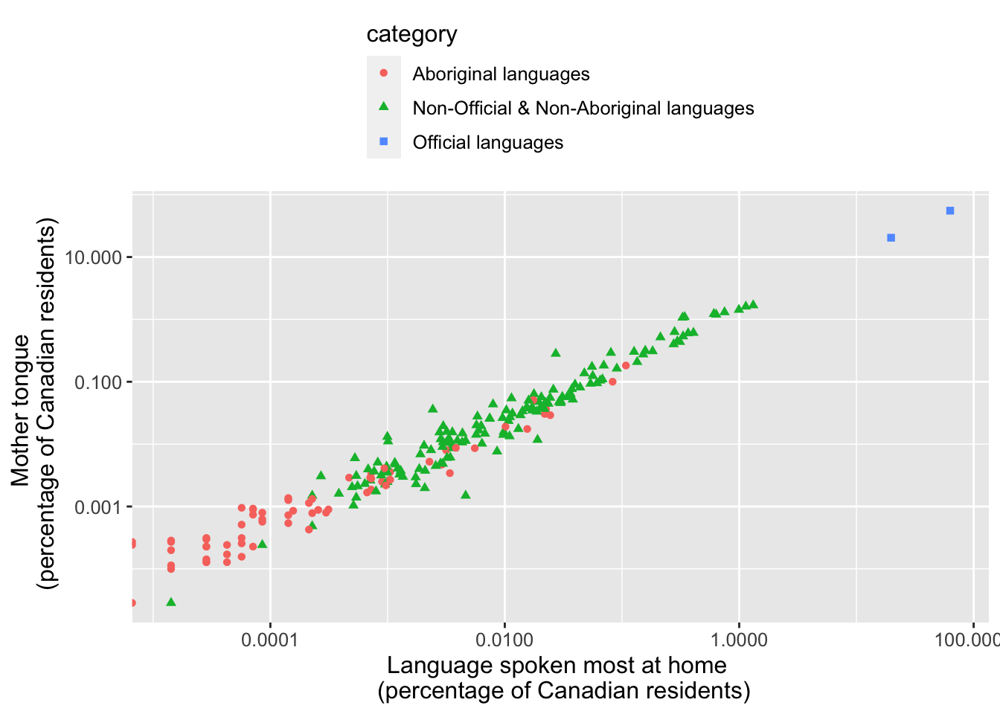
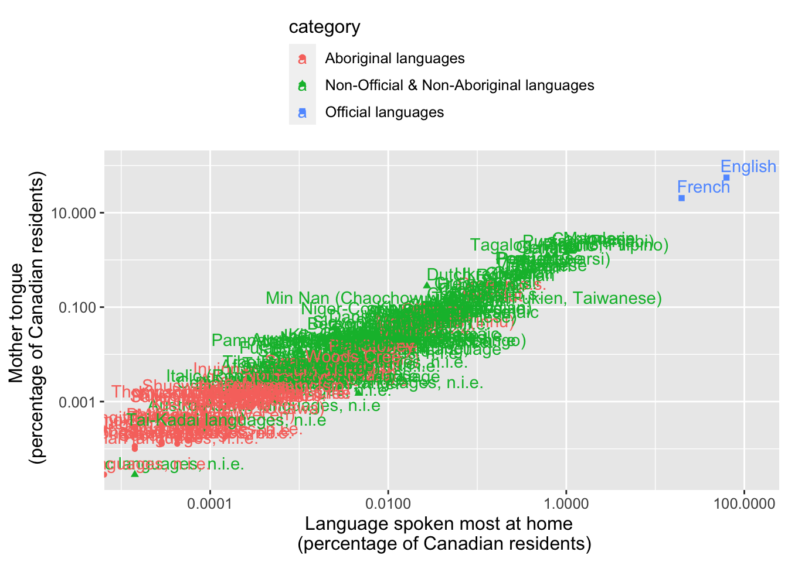
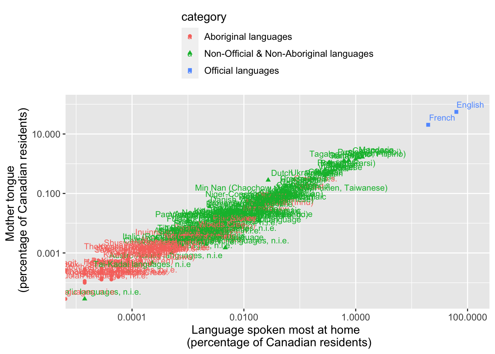
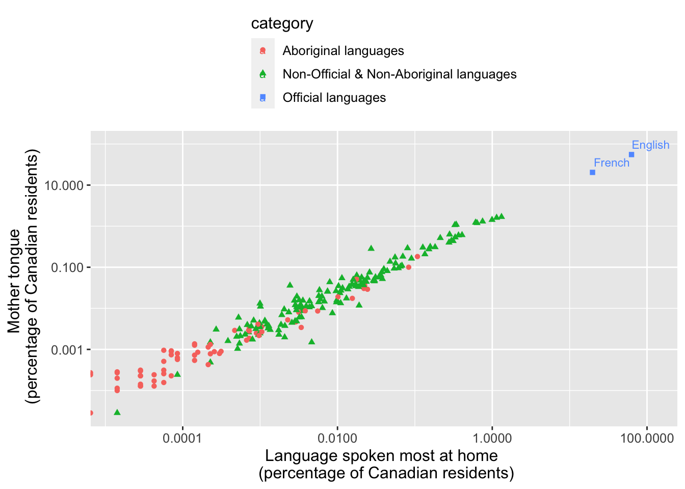
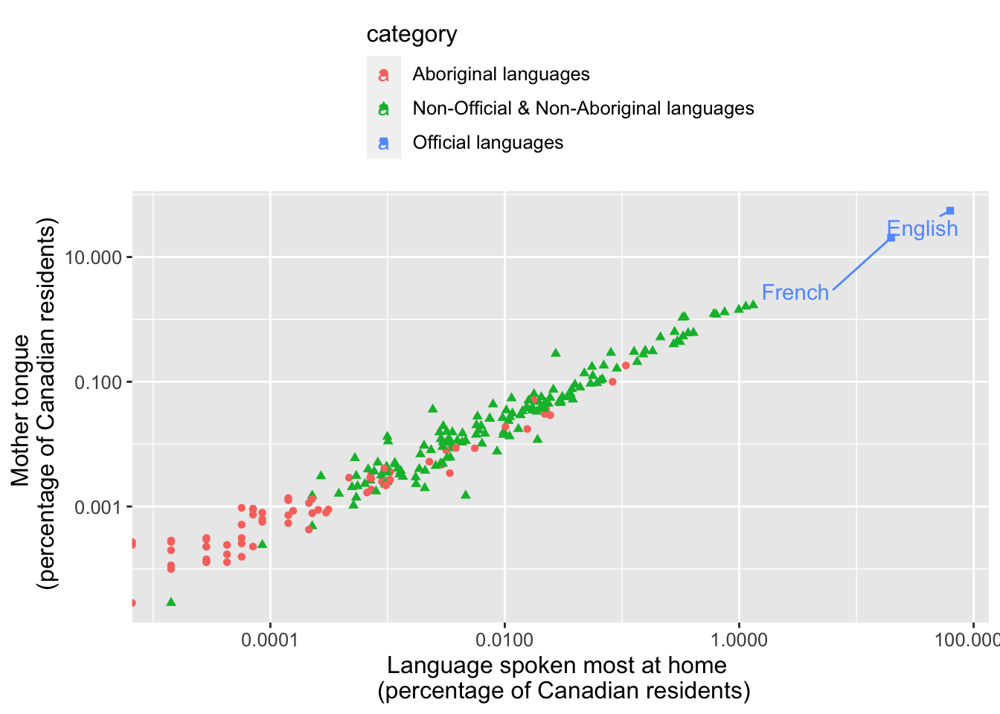
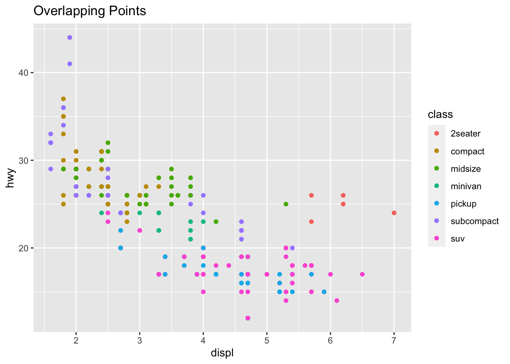
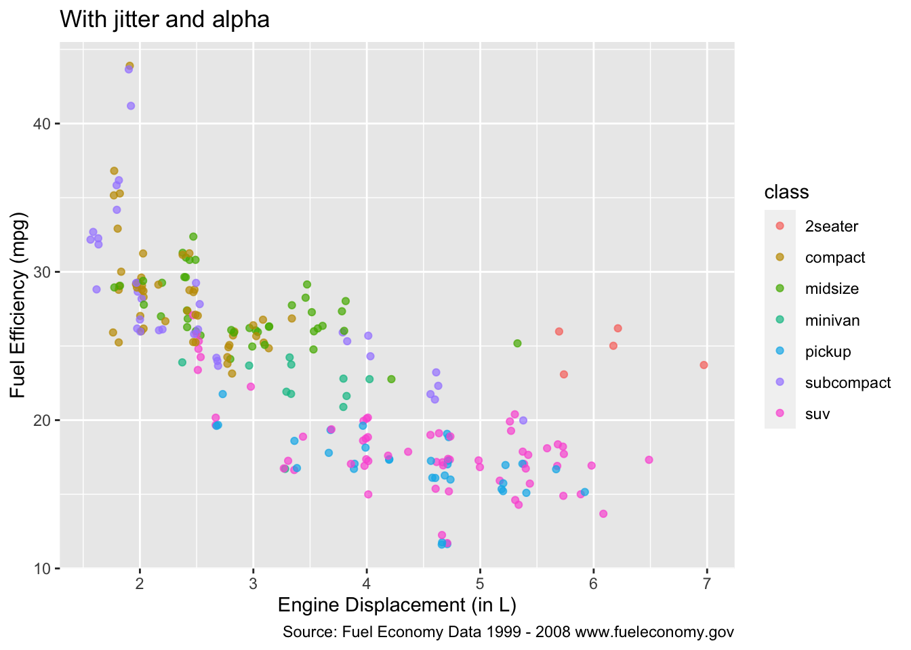

library(tidyverse)STAT 118: Notes G
Making plots with ggplot2: working with numeric data using scales, labels, jitter

#Import the can_lang dataset
can_lang <- read.csv("https://raw.githubusercontent.com/ttimbers/canlang/master/inst/extdata/can_lang.csv")scatterplot of can_lang
ggplot(can_lang, aes(x=most_at_home, y=mother_tongue)) +
geom_point() +
xlab("Language spoken most at home \n (number of Canadian residents)") +
ylab("Mother tongue \n (number of Canadian residents)") +
theme(text = element_text(size = 12))
Notice anything weird about this plot?
Axis transformations using the scales package
library(scales)ggplot(can_lang, aes(x = most_at_home, y = mother_tongue)) +
geom_point() +
xlab("Language spoken most at home \n (number of Canadian residents)") +
ylab("Mother tongue \n (number of Canadian residents)") +
theme(text = element_text(size = 12)) +
scale_x_log10(labels = label_comma()) +
scale_y_log10(labels = label_comma())Warning: Transformation introduced infinite values in continuous x-axis
mutate to create new columns
can_lang <- can_lang %>%
mutate(
mother_tongue_percent = (mother_tongue / 35151728) * 100,
most_at_home_percent = (most_at_home / 35151728) * 100
)Scatterplot with Percents and Colors
ggplot(can_lang, aes(x = most_at_home_percent,
y = mother_tongue_percent,
color = category, shape=category)) +
geom_point() +
xlab("Language spoken most at home \n (percentage of Canadian residents)") +
ylab("Mother tongue \n (percentage of Canadian residents)") +
theme(text = element_text(size = 12),
legend.position = "top",
legend.direction = "vertical") +
scale_x_log10(labels = comma) +
scale_y_log10(labels = comma)Warning: Transformation introduced infinite values in continuous x-axis
Labels
Adding text to a plot is one of the most common forms of annotation. Most plots will not benefit from adding text to every single observation on the plot, but labeling outliers and other important points is very useful.
ggplot(can_lang, aes(x = most_at_home_percent,
y = mother_tongue_percent,
color = category, shape=category)) +
geom_point() +
xlab("Language spoken most at home \n (percentage of Canadian residents)") +
ylab("Mother tongue \n (percentage of Canadian residents)") +
theme(text = element_text(size = 12),
legend.position = "top",
legend.direction = "vertical") +
scale_x_log10(labels = comma) +
scale_y_log10(labels = comma) +
geom_text(aes(label=language),
nudge_x = 0.25,
nudge_y=0.25)Warning: Transformation introduced infinite values in continuous x-axis
Transformation introduced infinite values in continuous x-axis
Yikes! This is way too much going on in one plot. A few options to try when this happens:
- Decrease the font size of the labels (using the
size=argument insidegeom_text). - Use the
ggrepelpackage to spread out the labels a bit more (more on this later - Pick out only a subset of the points to label
Size of labels
ggplot(can_lang, aes(x = most_at_home_percent,
y = mother_tongue_percent,
color = category, shape=category)) +
geom_point() +
xlab("Language spoken most at home \n (percentage of Canadian residents)") +
ylab("Mother tongue \n (percentage of Canadian residents)") +
theme(text = element_text(size = 12),
legend.position = "top",
legend.direction = "vertical") +
scale_x_log10(labels = comma) +
scale_y_log10(labels = comma) +
geom_text(aes(label=language),
nudge_x = 0.25,
nudge_y=0.25, size=3)Warning: Transformation introduced infinite values in continuous x-axis
Transformation introduced infinite values in continuous x-axis
Subset the labels
Create a new column for the labels. Use case_when (or ifelse) to only use the official language names and not to put a label for other language categories.
can_lang <- can_lang %>%
mutate(official_languages = case_when(category == "Official languages" ~ language, TRUE ~ NA ))ggplot(can_lang, aes(x = most_at_home_percent,
y = mother_tongue_percent,
color = category, shape=category)) +
geom_point() +
xlab("Language spoken most at home \n (percentage of Canadian residents)") +
ylab("Mother tongue \n (percentage of Canadian residents)") +
theme(text = element_text(size = 12),
legend.position = "top",
legend.direction = "vertical") +
scale_x_log10(labels = comma) +
scale_y_log10(labels = comma) +
geom_text(aes(label=official_languages),
nudge_x = 0.25,
nudge_y=0.25, size = 3)Warning: Transformation introduced infinite values in continuous x-axis
Transformation introduced infinite values in continuous x-axisWarning: Removed 212 rows containing missing values (`geom_text()`).
Using ggrepel
library(ggrepel)
ggplot(can_lang, aes(x = most_at_home_percent,
y = mother_tongue_percent,
color = category, shape=category)) +
geom_point() +
xlab("Language spoken most at home \n (percentage of Canadian residents)") +
ylab("Mother tongue \n (percentage of Canadian residents)") +
theme(text = element_text(size = 12),
legend.position = "top",
legend.direction = "vertical") +
scale_x_log10(labels = comma) +
scale_y_log10(labels = comma) +
geom_text_repel(aes(label=official_languages), min.segment.length=0, box.padding=1)Warning: Transformation introduced infinite values in continuous x-axis
Transformation introduced infinite values in continuous x-axisWarning: Removed 212 rows containing missing values (`geom_text_repel()`).
(Optional) Jitter
This dataset contains a subset of the fuel economy data that the EPA makes available on https://fueleconomy.gov/. It contains only models which had a new release every year between 1999 and 2008 - this was used as a proxy for the popularity of the car.
data("mpg")ggplot(data = mpg, aes(x = displ, y = hwy)) +
geom_point(aes(color = class)) +
ggtitle("Overlapping Points")
Note how there is only a fixed number of values for the x-axis and a fixed number of values for the y-axis. It’s possible that some points might be overlapping others!
Jittering is a technique for adding random noise to data points that have identical values in a plot. It is a useful method for avoiding overplotting and making it easier to visualize the density of data points that are otherwise hidden behind each other.
We add position="jitter" inside the geom_point layer:
ggplot(data = mpg, aes(x = displ, y = hwy)) +
geom_point(aes(color = class), position = "jitter", alpha=0.7) +
ggtitle("With jitter and alpha") +
xlab("Engine Displacement (in L)") +
ylab("Fuel Efficiency (mpg)") +
labs(caption = "Source: Fuel Economy Data 1999 - 2008 www.fueleconomy.gov")
Brain Break
Hans Rosling’s famous lectures combine enormous quantities of public data with a sport’s commentator’s style to reveal the story of the world’s past, present and future development.